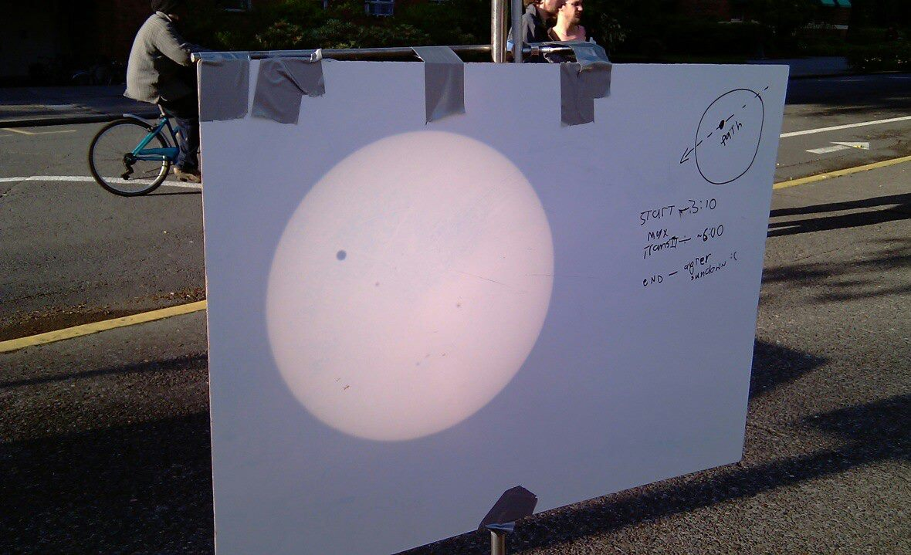
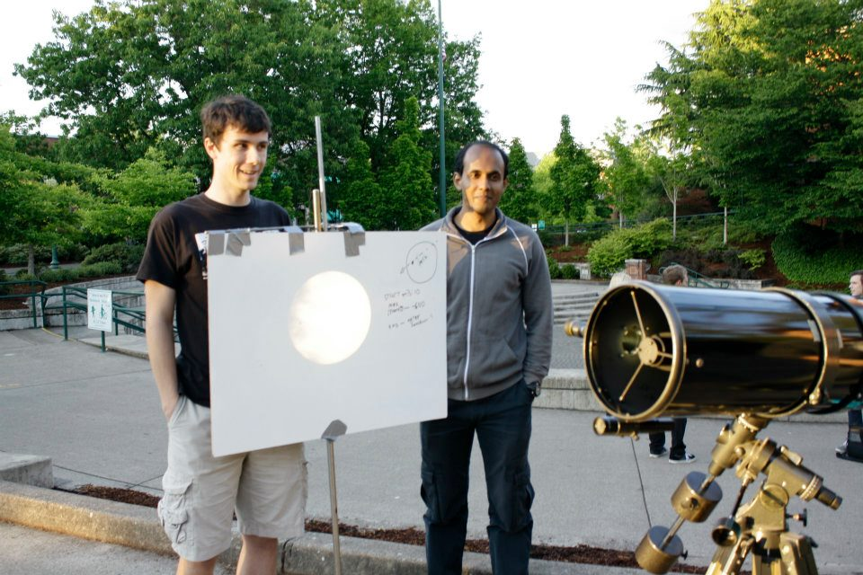

Miscellany
Transit of Venus

On the 5th of June 2012, the planet Venus happened to slowly transit across the face of the Sun (from Earth's perspective). Erik Keever and I decided to deploy a Cassegrain telescope out in the open on campus and project the Sun onto a whiteboard. The spectacle lasted all day, and attracted much public attention. The Sun was bright enough for a clean image even in broad daylight. The equatorial mount helped. A tracking motor would have helped even more.

The event is said to occur in pairs about 8 years apart, but the pairs are seperated by about 243 years. So the next one will occur on the 10th of December in the year 2117. Can't wait!